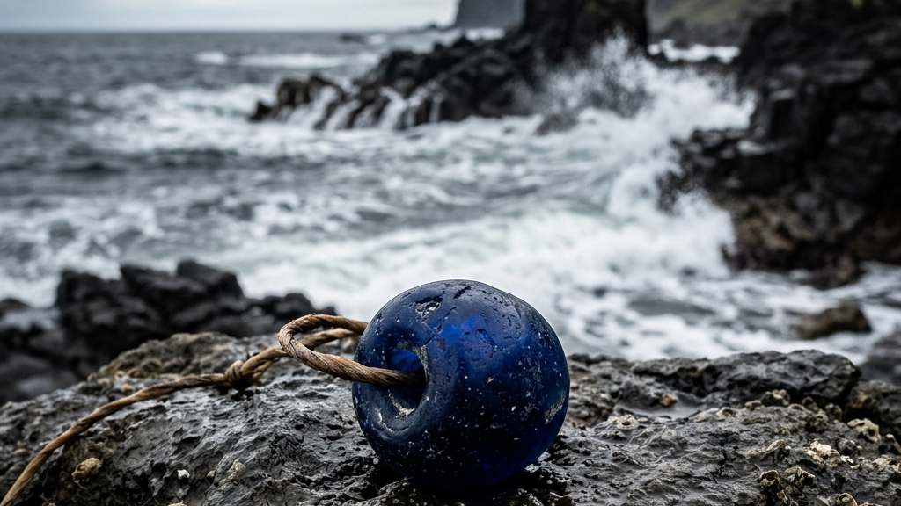
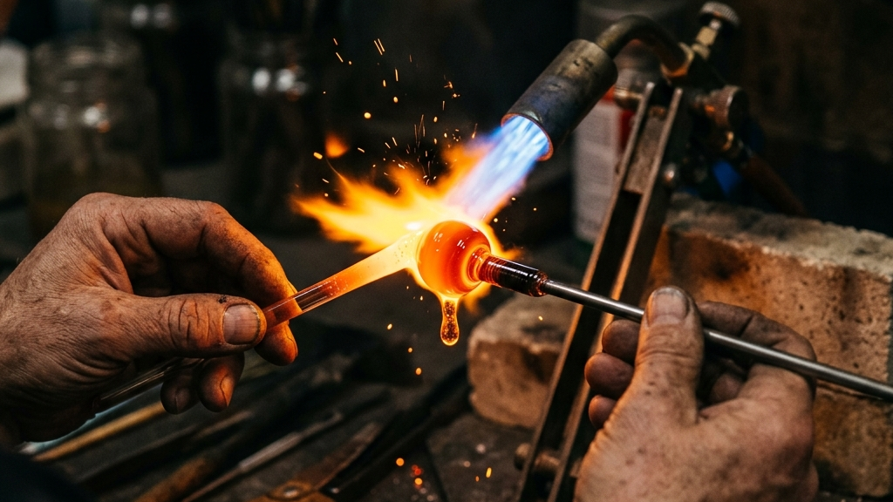
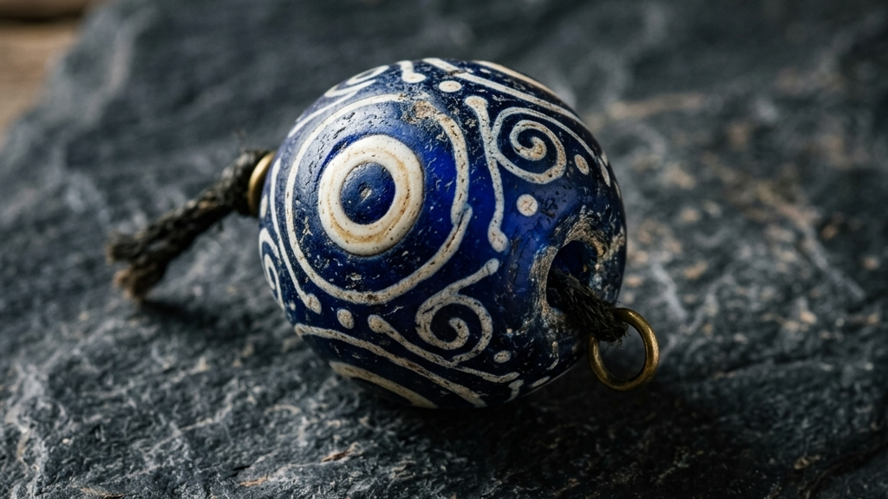
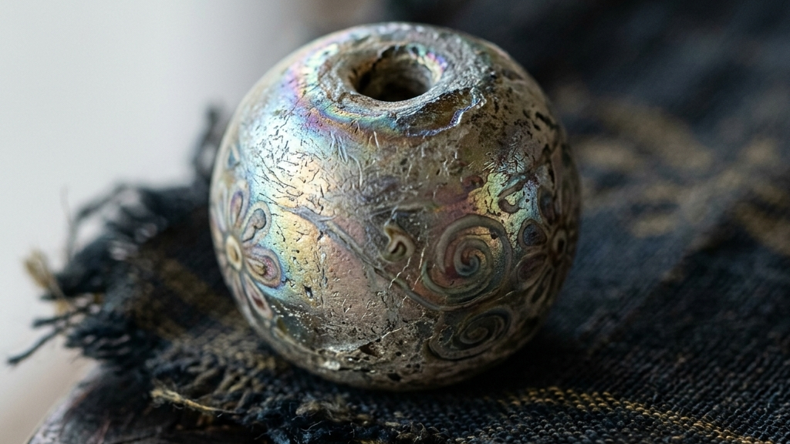
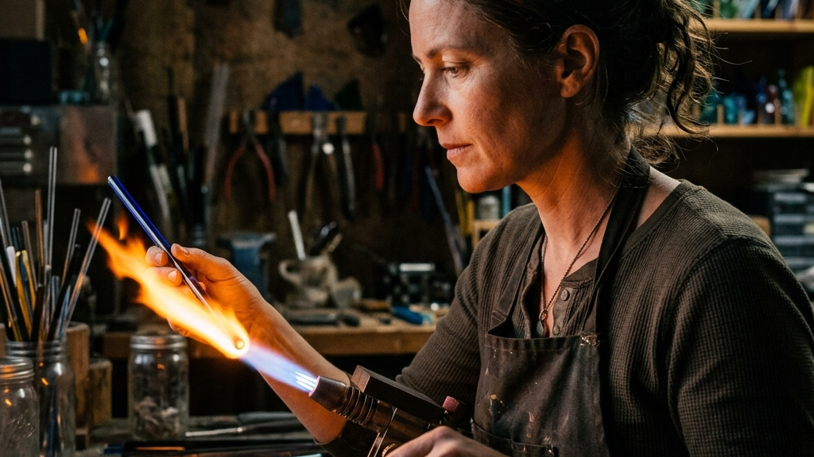

硝子という不思議な物質が放つ静謐な輝きには、人間の浅い制御を超えた時間の堆積が宿っています。
北海道の太平洋を望む様似の地において、人々がバーナーの炎を見つめ、ガラスの球体を自らの手で練り上げる試みが始まりました。
様似町はアポイ岳の重厚なかんらん岩の山並みが太平洋に切り立つ、峻厳な自然に満ちた風土を誇ります。
この大いなる大地の境界線で、約800度の炎を前にして、液体と固体の狭間にある硝子の肉体に対峙する体験が重ねられました。
【本稿で紐解く3つの核心】
かつて北の海を渡り、ユーラシア大陸や本州からもたらされた色彩豊かなガラス玉は、アイヌの人々にとって魔除けであり、大いなる祈りの象徴でした。
それらは自分たちでガラスを溶融し生産する術を持たなかったからこそ、命懸けの交易の果てに入手した至高の精神的装置だったのです。
本稿では、様似で蘇ったトンボ玉づくりの身体的実践を手がかりに、その歴史の地層と手仕事がもたらす五感の回復を深く探求します。
アイヌの人々の胸元を飾る青い大粒のガラス玉は、単なる美的な装飾品という枠組みを遥かに超えた存在です。
それらは「タマサイ」と呼ばれる壮麗な首飾りとして編み上げられ、ハレの日の儀式において一族の誇りを示すために身に付けられました。
ガラスを自ら精錬する技術を持たなかった彼らにとって、これらはすべて外部世界との極めて緊密な交易によってもたらされたものです。
歴史の地層を遡ると、これら色鮮やかなガラス玉の流通ルートは二つに大別されます。
一つは、本州の和人から松前藩を介して、米や漆器とともに運ばれてきた江戸ガラスの系譜です。
そしてもう一つは、サハリン経由でロシアや清朝の支配下にあったアジア大陸から、アムール川流域の山丹交易を通じてもたらされたユーラシアの硝子群です。
これら地球規模の対話の結節点こそが、かつて「シャマニ場所」と呼ばれた様似の海岸線でした。
山丹交易においては、黒竜江下流からサハリンを経由し、北方先住民族であるニヴフやウイルタの仲介によってガラス玉がもたらされました。
これらの硝子は、はるかシベリアの原野や清朝の都である北京のガラス工房にまでその起源を遡ることができます。
アジア大陸の奥深くで調達されたコバルトの鉱石がガラスに溶け込み、独自の青い色彩を獲得したのです。
当時の交易ルートは、季節の過酷な循環に支配されていました。
春から夏にかけて、アムール川の氷が融解すると、大陸の商人たちは毛皮やシルク、そしてきらびやかなガラスビーズを積んだ舟を操り、下流のデレンと呼ばれる交易地へと向かいました。
そこでサハリンの先住民族と接触し、極寒の海を越える準備が整えられます。
秋、流氷が押し寄せる直前のわずかな波穏やかな季節を狙い、丸木舟を連ねて間宮海峡を渡り、サハリンのアイヌのもとへと物資が引き渡されました。
さらに冬が訪れると、凍結した海峡を犬ぞりで渡る氷上ルートが切り開かれ、厳寒の闇のなかで人知れず物質が移動したことも分かっています。
その青い玉は、黒竜江の激流を下り、流氷の押し寄せる間宮海峡を越えて、サハリンのアイヌの元へと運ばれました。
さらにそこから、荒れ狂う宗谷海峡を越え、北海道の太平洋岸にある様似へと、数千キロもの旅を経て到達したのです。
それは、想像を絶する空間的広がりと時間の堆積を内包した、奇跡のような物質の旅路でした。
アイヌの人々は、これらの流通したガラス玉の色彩や形状を極めて厳格に見分け、価値を格付けしていました。
深く不透明な青い玉は「ルウンペ」と呼ばれ、最も希少価値が高い宝物として珍重されました。
一方で、透明感のある美しい水色の玉は「ニオイ」と呼ばれ、その軽やかな輝きが喜ばれました。
さらに、まれに本州から流入した赤や黄色の縞模様を持つ玉は、特別なステータスシンボルとして扱われたのです。
彼らは単に与えられたビーズを繋いだのではなく、その微細な表情の違いに高い解像度で向き合っていました。
一方で、松前藩を介した日本海交易ルートからは、大坂や江戸の職人が手がけた和ガラスが運ばれました。
これら東西の物質文化が、北海道の南端にあるシャマニの地で劇的に交差したのです。
北前船の寄港地でもあった様似は、単なる地方の僻地ではなく、世界と本州を結ぶ巨大なネットワークの結節点でした。
当時の人々は、海の道を通じて世界中の美意識と技術をこの場所に集約していたのです。
サハリンを経由した山丹交易が最盛期を迎え、大陸産の青いガラスビーズが北海道へと大量に流入しました。アイヌ文化における首飾りタマサイの基本構成が形成された時代です。
江戸幕府および松前藩による東蝦夷地直轄化に伴い、様似地域が太平洋岸における重要な交易の拠点として確立しました。和ガラスと特産品の交換が本格化します。
北前船の寄港地として機能した様似は、本州からの高度な物質文化を吸収しました。アイヌの伝統的文様とガラスという無機質な異素材が完全に融和し、独自の造形美を極めたのです。
当時の文献によれば、極上の青いガラス玉一つに対して、数十枚もの良質なニシンの毛皮や、貴重なサケの乾物が交換されたと記録されています。
それは実用的な価値を超えた、精神の価値を取引する行為でした。
和人や大陸の商人たちは、ガラスという工業的に大量生産可能な物質の価値を低く見積もっていたかもしれません。
しかし、アイヌの人々にとっては、その輝きこそがカムイの宿る聖なる依代であり、この世で最も尊い精神的財産だったのです。
彼らはこれらのガラス玉をイコルと呼び、決してお集やお金で測ることのできない尊厳として、何世代にもわたって継承し続けました。
これは、外部からもたらされた異素材を、自らのアニミズム的な信仰体系のなかに主体的に組み込み、再解釈したクリエイティブなアクトです。
彼らは与えられたガラスの美しさに受動的に従うのではなく、自らの身体感覚と精神世界に適合するように、その配列や意匠を厳格にデザインし直しました。
世界各地の先住民族が伝統的な意匠と異質な近代素材を交差させて新たなアートを生み出したように、このガラス玉の受容も極めて高度な創造的アクトでした。
その物質的な変容と先住民アートが切り開いた現代の地平については、境界の消失と新たな文脈の現前：先住民アートが示す現代美術の真なる射程でも詳細に議論されています。
様似の海辺に流れ着いたガラス玉は、単なる工芸の枠を越え、異なる二つの文化が命懸けで交わした言葉なき対話の結晶そのものなのです。

ガラスという物質は、常温においては完璧な固体として振る舞いますが、炎に晒された瞬間、自らの輪郭を失って流動的な液体へと変容します。
様似で開催されたトンボ玉づくりの現場は、この冷徹な物理法則と人間の身体感覚が限界でぶつかり合う、極めて緊張感に満ちた実験場です。
バーナーから吹き出す炎は、瞬時に約800度の熱量をガラス棒へと叩き込みます。
この800度という温度は、ガラスを構成するシリカの結晶構造を破壊し、分子が自由に変形し始める特異点です。
シリカの融点は本来1700度を超えますが、ソーダ灰や石灰石を配合することで、融点を800度付近まで引き下げたソーダガラスの物理化学的な性質が、この手仕事の舞台を支えています。
二酸化ケイ素の強固な三次元網目構造のなかに、網状修飾イオンとして機能するナトリウムが割り込むことで、結合のネットワークが適度に分断され、比較的低い温度でもガラスが流動性を獲得するのです。
この化学的な配合の妙によって、職人は過酷な大型の融解炉を必要とせず、手元の小さな炎だけでガラスの肉体を自在に操ることが可能になります。
しかし、流動的になったガラスは急激な温度変化に対して極めて過敏に反応します。
ガラスは急激な加熱によって熱膨張を起こし、破裂する危険性を常に孕んでいます。
そのため、職人はまず炎の周囲にある比較的温度の低い余熱領域で、ガラス棒を優しく包み込むように温めなければなりません。
十分に温度が上がった段階で、いよいよ炎の核心である最も高温の領域へとガラスを進入させます。
指先がわずか1ミリ動くだけで、熱せられたガラスは重力に従い、無残に垂れ落ちてしまいます。
完璧な対称性を持つ球体を創り上げるためには、融解したガラスを鉄製の芯棒に正確に巻き付け、回転のスピードを常に変化させ続けなければなりません。
ガラス棒から溶け落ちる一滴のタイミングを見極め、芯棒を水平に保ちながら、均等に巻き取る作業。
そこには、言葉によって伝えることのできない身体知が厳然として存在します。
さらに、炎のなかのどの位置にガラスを置くかによって、温度は激しく変化します。
バーナーの炎は、酸素とガスの混合比率によって還元炎と酸化炎に分かれます。
ガラスに含まれる金属成分の発色を制御するためには、炎の化学的性質をも指先の距離感だけで制御しなければならないのです。
コバルトや銅などの金属酸化物が美しい発色を見せるためには、炎の中の酸素濃度が完璧に保たれている必要があります。
職人は、バーナーから発せられるゴーッという燃焼音の変化を耳で聞き分け、炎の形状を目で睨みながら、感覚だけでガス圧を調整します。
これは、視覚、聴覚、そして指先の触覚が高度に統合された、まさに全身の知覚を用いたアクトです。
成形し終えたガラスを冷却する徐冷プロセスもまた、物理現象との極めて繊細な対話です。
ガラスの温度が低下する際、粘性流体から非晶質固体へと相転移する「ガラス転移点（およそ500度）」から「徐冷点」と呼ばれる極めて狭い温度領域を、どのように通過させるかが勝負の分かれ目となります。
ガラスが急冷されると、外側の層が先に固まり、内側が後から収縮するため、内部に巨大な引張応力（歪み）が残留してしまいます。
この歪みは目に見えませんが、ガラスの内部に強烈な爆弾を抱え込んでいるような状態であり、わずかな衝撃や常温での温度変化によって、ある日突然粉々に砕け散る原因となるのです。
これを防ぐため、職人は完成したガラス玉をすぐさま藁灰や珪藻土などの徐冷剤のなかに埋め、熱の伝導を極限まで遅らせるのです。
1時間以上の時間をかけてゆっくりと熱を逃がすことで、シリカの分子配列が均一に再構成され、強靭な物理的強度が獲得されます。
この800度という極限の熱量に対する制御は、デジタルデバイスのように数値でマニュアル化できるものではありません。
溶けていくガラスの微妙な輝きを目で捉え、粘度の変化を指先の重みで察すること。
それは、物理的な質量と温度変化が、人間の皮膚感覚と一体化する瞬間の獲得にほかなりません。
この身体感覚の獲得プロセスこそが、失われつつある職人の暗黙知そのものです。
このような指先の感覚的フィードバックと物性の制御は、他の最高峰の工芸分野においても全く同様の構造が見出されます。
三線の微細な木質変化や弦の張力を数値化し、職人の暗黙知に迫ろうとした試みについては、三線の音色を数値化する。職人の「暗黙知」を解き明かす科学と伝統のクロスオーバーで描かれている通りです。
感覚的な世界をデータに翻訳しようと試みる科学の刃と、身体を信じ抜く職人の指先。
その二つは、決して相容れないものではなく、物質の真実を異なる言語で語り合っているのです。
完璧なガラス球をひとつ生み出す背後には、目に見えない無数の身体的失敗と、物理現象との泥臭い和解が存在しています。
「炎の温度を操るのではない。ガラスが最も美しく丸みを帯びる瞬間を、己の指先の感覚を通じてただ待ち、受け入れるのだ」
（様似でトンボ玉づくりを実践する職人の語りより）
指先に全神経を集中し、液体の重みを制御するその刹那、私たちは脳内の雑音から解放されます。
炎という野生の力と静かに対話することによってのみ得られる、静謐な調和がそこにはあります。
それは、効率化という現代の病を洗い流し、私たちの身体に野生の感性を呼び覚ます儀式なのかもしれません。

トンボ玉の表面に施された複雑な模様には、単なる装飾を超えた、見えない魔物を退けるための強固な防波堤としての機能が与えられていました。
特に点打ちと呼ばれる、地色のガラスに対して異なる色彩のガラスを点状に溶かし込む技法は、多重の円形模様を生み出します。
古代の人々はこの円形を邪視を睨み返す眼として捉え、呪術的な魔除けとして活用しました。
この目玉模様は、古代エジプトのナザール・ボンジュウや、メソポタミアの古代ガラスビーズとも深く共通する、世界規模の呪術的ネットワークを持っています。
邪悪な視線を睨み返し、持ち主に降りかかる災いを未然に防ぐという思想は、極東の地である北海道のアイヌ文化にも完全に息づいていました。
ユーラシア大陸の西端で生まれた魔除けの意匠が、気が遠くなるような時間と空間を越えて、東の果てである北海道の地にまで到達したこと。
この壮大な歴史の連なりこそが、物質に宿る記憶の重量感です。
アイヌ民族の首飾りタマサイにおいて、このトンボ玉は鎖状に繋がれ、首元の急所を覆うように配置されました。
首飾りの中央には、多くの場合シトキと呼ばれる真鍮製の丸い金属板が取り付けられ、太陽の光を反射して魔物を遠ざけました。
このタマサイの構造は、着用者の生命を外部の邪気から保護するための完璧な呪術的プロテクターだったのです。
最も強烈な力を持つとされたのが、深い太平洋の海水を切り取ったかのような、鮮烈な青色のガラス玉でした。
この青は、アニミズムの世界観において、自然界に満ちる悪意あるカムイの侵入を物理的に遮断する精神の鏡として機能したのです。
悪霊は、この深い青の輝きを、底なしの深い水面や大空の無限の深淵と錯覚し、畏怖して近寄ることができなかったと伝えられています。
熊送り儀礼であるイオマンテや、神々へ祈りを捧げるカムイノミの場において、タマサイを身に付けた女性たちが舞うとき、ガラス玉同士がかすかに触れ合い、清らかな音を奏でました。
薄暗いチセのなか、囲炉裏の火に照らされた青いガラス玉が放つかすかな光彩と、静寂の中に響くその微細な擦れ合いの音。
それは、人々と神々を繋ぐための神聖な波動であり、儀式に参列する人々の魂を大いなる自然と調和させるアニミズム的な効果を持っていました。
| 色彩・意匠の構成 | 使用されたガラスの出自 | 精神・民俗学的な呪術機能 |
|---|---|---|
| 深紺・コバルトブルー | アムール川経由の大陸産ガラス | 深海と天空の力による、絶対的な魔物の侵入阻止 |
| 多重同心円（アイ玉） | 江戸中期の和ガラス製品 | 邪悪な視線を物理的に睨み返し、無力化する守護眼 |
| 白波線（流れ模様） | 清代の中国から流入した硝子 | 水の流れを象徴し、身体に溜まった穢れを清める浄化 |
これらの文様を描く際、職人は異なる融点を持つガラスを重ね合わせるという、極めて高度な熱制御を行わなければなりません。
融点が少しでも合わなければ、熱した際に模様部分だけが剥がれ落ちたり、ガラス自体が割れてしまいます。
そこには、物理的な物性への深い知識と、祈りという精神的要請が完全に一致した、工芸的強度の極致が顕現しています。
このような、自然の素材に対して精神的な防波堤を編み込むという営みは、日本の他の無形文化財にも深く通底する思想です。
雪深い昭和村において、一本の繊維を紡ぐことで家族の生存を祈り、歴史の防波堤を構築した伝統については、からむし織とは何か。福島県昭和村で紡がれる最高峰の伝統工芸と織姫たちの継承で解剖されています。
からむしという植物の繊維が、女性たちの執念深い手技によって強靭な糸に生まれ変わるように。
無機質なガラスの表面に焼き付けられた魔除けの模様もまた、人間が過酷な風土を生き抜くための防波堤そのものでした。
トンボ玉に刻まれた一本の白い波線は、厳しい極北の自然を生き抜くために、古代の人々が物質に託した真摯な生存への誓いだったのです。

ガラスは不変の物質であるかのように思われますが、何百年もの間、土の中に埋もれ、あるいは潮風に晒されることで、静かに、しかし劇的な変化を遂げます。
その表面が水分や周囲の成分とゆっくりと化学反応を起こし、ナノスケールの微細な層を形成していく現象を銀化と呼びます。
光がその微細な凹凸に乱反射することで、かつての鮮やかだった青は、まるで真珠や貝殻の内側のような、鈍く神秘的な七色の虹彩を放ち始めます。
ガラスを構成するケイ酸塩の網状構造から、長い時間をかけてアルカリ金属イオンが溶け出すこと。
それによって表面に形成された多層のシリカゲル薄膜が、光の反射において物理的な干渉色を引き起こします。
特定の波長だけが強調され、人工的な顔料では決して再現できない、時間の深層を物語るような輝きが顕現するのです。
これは、自然界の熱力学的な崩壊プロセスが生み出した、作為なき奇跡と言えます。
この経年による変容こそが、和ガラスが持つ引き算の美学の究極の到達点です。
江戸の鉛ガラスは、特有の重厚な屈折率と柔らかさを備えています。
鉛の比重が高い江戸ガラスは、硬度が低く傷つきやすい反面、光をその奥深くへと優しく吸い込むような独特の質感を持っています。
柔らかいからこそ、土中での摩擦や酸性成分による浸食を受けやすく、それが極めて美しい銀化層を育む土台となりました。
そこに歳月という圧倒的な非効率が加わることで、ガラスは冷たい無機物から、時間を内包した有機的な美へと昇華されます。
作為的に作られた真新しいきらびやかさを捨て去り、自然の時間のなかに自己を投げ出すこと。
歳月を吸い込み、磨耗していくことでしか生まれ得ない、圧倒的に静謐で物静かな美しさがそこにあります。
この、光を内包しながら同時に引き算していく美学は、同じガラスの工芸である切子の世界とも深く響き合っています。
江戸の職人たちが光の屈折を物理的に切り刻むことで、伝統を脱構築しようとした軌跡については、透過する光と刻まれる軌跡：江戸切子が提示する、伝統の脱構築と新たなパラダイムで詳述されています。
また、素材の極限に挑み、過剰な装飾を削ぎ落として素材本来の意思を現前させるストイックな姿勢は、江戸切子に宿る引き算の美学。伝統工芸の極限と限界への挑戦の精神とも完全に合致するものです。
さらに、こうした廃ガラスと自然素材の融合がもたらす現代的アート表現は、海外のラグジュアリーな空間デザインの現場でも劇的な評価を得ています。
モナコの地で廃ガラスの透過光と和紙の柔らかいテクスチャーを共鳴させた挑戦については、和紙と廃ガラスの空間芸術「縁桜」 モナコ公国を魅了した株式会社アルチザンの挑戦で描かれています。
伝統が生き残るためには、単に過去の形を保存するだけでなく、現代の最前線にあるデザイン文脈へと越境し、接続し直す覚悟が必要です。
時の重みに耐え抜き、人間の思い通りにならない不完全さを受け入れること。
経年したトンボ玉が放つ静かな佇まいは、安易な消費に抗い、1000年先の未来へ価値を遺そうとする私たちの美意識の羅針盤となってくれます。
私たちは、その歪んだガラスの表面に、言葉を超えた物質の魂を見出すのです。

現代を生きる私たちは、あらゆる情報が数秒で検索でき、すべてが効率化のシステムに回収される世界に身を置いています。
脳は常にアルゴリズムに最適化された大量の記号を処理し続け、結果として、私たちの身体感覚は著しく鈍麻し、退化を余儀なくされています。
二次元の滑らかなディスプレイをフリックし、瞬時に答えを得るだけの生活は、私たちから物理的な摩擦と格闘する悦びを奪い去りました。
こうした効率至上の狂騒に対する強烈なアンチテーゼとして、様似のトンボ玉づくりは、私たちに極めて重厚な時間の美学を提示しています。
バーナーから噴き出す八百度の熱風の前に身を投じるとき、私たちはただ、ガラスが融解し、重力と対話するのを待つしかありません。
そこには、こちらの都合で操作できるコントロール可能な領域など存在しないのです。
どれほど焦って手を動かしても、ガラスが熱を帯びて軟化するまでの時間を物理的に縮めることは不可能です。
この思い通りにならない時間を受け入れ、ただじっと待つこと。
それは、未来への不安から短期的な一時しのぎに逃げてしまう自分を直視し、弱さを受け入れるプロセスそのものです。
若き日に父親と激しい衝突を起こし、30代になるまでの長い年月をかけて自分の誓いを現実のものにした、あの不器用で執念深いエネルギー。
すぐには結果の出ない時間を耐え抜き、執念深くやり続ける強さこそが、自らの文化を形作るための最大の原動力となります。
「やめないやつが一番強い。小さくても続けて自分の文化にする」という美学は、この気の遠くなるようなガラスの成形プロセスとも深く繋がっています。
何かを見落とさないように力むのをやめ、自然体で五感を開き、足元の枯葉を踏み鳴らすような無駄な余白の美しさを享受すること。
その受容の姿勢があって初めて、指先はガラスの微細な流動性を正確に感知し始めます。
自分の都合を押し付けるのを手放し、目の前の物理現象をそのまま受容した上で、自らの指先の動きをミリ単位で最適化していくこと。
この非効率な受容のなかにこそ、私たちの鈍化した知覚を呼び覚ます鍵があります。
Editor's Note: 五感の受容と身体知の獲得
かつて雨の日の神社で、神主が振る大幣のしゃらんという鈴の音に空気が震え、その祈りの形を頭ではなく身体で理解した瞬間がありました。
生存率の低かった赤ん坊が無事に生き延びたことへの感謝を、千年の時を超えて身体的になぞるお宮参りの儀式。
千年の歴史を持つその祈りの儀式も、このガラス棒を巻き付ける15分の身体的実践も、本質的な根底は等しく繋がっています。
それは、過去の膨大な時間が磨き上げた型を、プライドを捨てて素直に身体へインストールする守破離の営みそのものです。
ちっぽけな自己流のこだわりを一度手放し、歴史や物性が提示する型を徹底的に真似る。
その徹底的な模倣の先にこそ、真のオリジナルが立ち現れるのです。
不器用でも、思い通りにいかなくても、己の指先の美学の羅針盤を信じて小さく手を動かし続けること。
その泥臭いプロセスの果てに、他者の評価とは無関係な、自分にとって本当に美しいと思える俺っぽいオリジナリティが誕生します。
かつて過酷な炭鉱の底において、直接石炭を掘らないものの、そこに佇むだけで現場の空気を和らげたスカブラと呼ばれる存在がいました。
このスカブラの存在のように、一見すると非効率で無駄に見える余白こそが、私たちの精神を最も健全に機能させます。
トンボ玉づくりの非効率なプロセスもまた、私たちの日常生活においてそのような本質的な余白を創り出す、芸術的な装置なのです。
役目を終えてただの廃墟となった軍艦島のコンクリート階段を見上げたとき、かつて地下深くの過酷な現場へと毎日降りていった労働者たちの足音が聞こえる気がしました。
時代が変わり、その場所が産業としての役目を終えたとしても、そこに込められた人々の熱量と誇りの記憶は消えずに宿り続けます。
かつて様似の交易によってもたらされ、現代の地層から発見された古いトンボ玉にも、過酷な北の海を渡り、家族を思い、生き抜こうとした古代の人々の生きた記憶と覚悟が確かに染み付いています。
非効率を徹底的に愛し、時間をかけて球体を作り上げるトンボ玉の身体知は、鈍麻した私たちの感覚を劇的に蘇生させます。
様似の海風が静かに通り抜ける工房のなかで、赤熱するガラスを見つめる職人の眼差しには、千年の未来へとバトンを繋ぐ、揺るぎない覚悟と静かな祈りが宿っているのです。
Reference:
伝統工芸に挑戦 様似 オリジナルトンボ玉づくり
伝統を身に纏い、1,000年先の未来へ遺す。Kakeraが織り上げる西陣織アロハシャツの哲学と私たちの物語は、CONCEPT、Kakera Aloha、およびABOUTよりご覧いただけます。